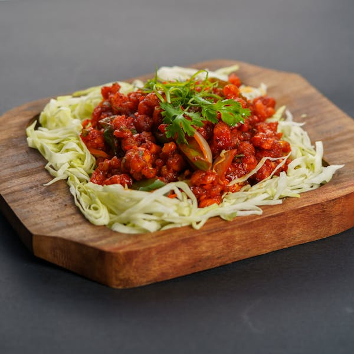
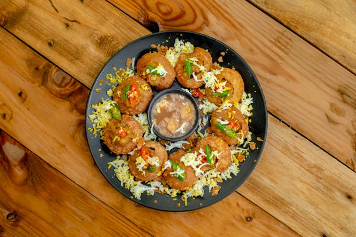
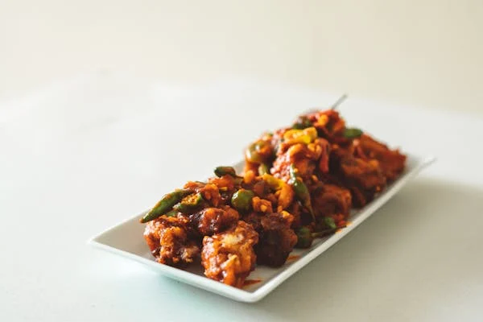
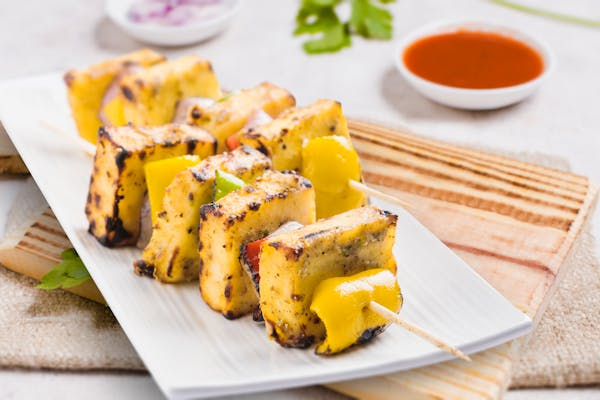

Butter Chicken:
a rich and creamy dish of marinated chicken in a spiced tomato-butter sauce
Gobi 65:

Indian appetizer made with cauliflower, which is marinated in a spiced batter, deep-fried to a crispy texture, and then tossed in a tangy, flavorful sauce.
Veggie Manchurian:

Indo-Chinese dish made from finely chopped vegetables like cabbage, carrots, and beans, which are mixed with flour, formed into small balls, and deep-fried to a crispy golden-brown texture.
Corn Manchurian:

Indo-Chinese dish made with sweet corn kernels that are combined with seasonings and shaped into small fritters or balls.
Pani Puri (6 pieces):

Small, round, hollow puris (crispy shells made from semolina or flour), which are filled with a spicy, tangy water known as "pani," along with a mixture of potatoes, chickpeas, or mung beans.
Chilli Paneer:

Indo-Chinese dish made with cubes of paneer (Indian cottage cheese) that are stir-fried in a hot and spicy sauce.
Paneer 65:

Paneer (Indian cottage cheese) cubes marinated in a mixture of yogurt, ginger- garlic paste, red chili powder, turmeric, and various spices